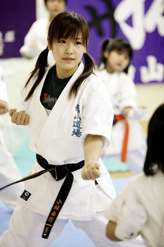
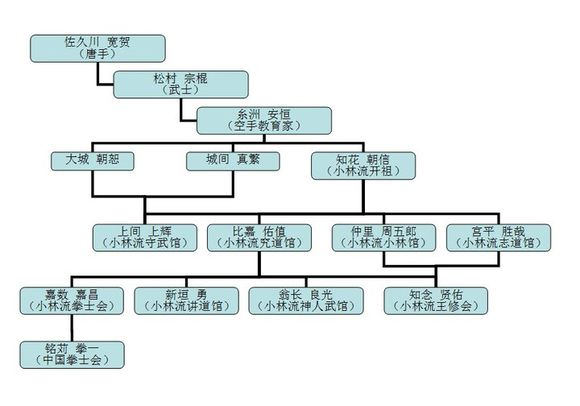

1、道服的差异
空手道道服一般为纯白，左胸绣有道场组织名，下摆处有时会出现一些诸如所有者姓名的小字。衣形为开衫，左侧衣襟压右侧衣襟，由腰带系紧。袖长一般在手肘附近，不同会馆会出现一定的差异。腰带一般为纯色，各流派及会馆的分级有差异，中国拳士会的分级从低到高分别有白、橙、红、蓝、黄、绿、蓝、咖啡、黑，段前共8级。
2、技术侧重点
空手道对抗竞技中往往手脚并用。套路（型）中总体以手法为主，腿法以直线为主。以小林流拳士会为例，黑带前必须掌握的八套型中仅出现过前踢等简单直线腿法，高级型中可见侧踢（公相君大）等，也以直线腿法为主。但在实际竞技中也会有回蹴（跆拳道称为横踢）、侧踢、后踢等等动作，但大多沉稳扎实，较少空中腿法和转身动作。
跆拳道WTF对抗竞技中一般多用腿法，拳法较少。套路（品势）中腿法较多，从第一套套路开始即出现腿法攻防。竞技中多空中腿法和转身腿法，动作凌厉潇洒。
3、对抗竞技规则
空手道实战规则有许多种，常见的有：全接触（特征是拳不击头，一般较少穿护具）、寸止（一击得分or击倒制，不穿护具或只戴少量护具）、防具（穿戴全身护具全力击打）等等，规则较多较不统一。
跆拳道（WTF）实战规则较为统一，基本上为腿法击打有效部位得分或者击倒，需穿戴全套护具，且低段腿法（踢击对方的腰带以下部位）不得分。
4、历史渊源
空手道的起源与中国武术关系密切，早期空手道被称为“唐手”，可见中国对空手道的影响。据记载，空手道最早是由琉球传统打斗术“手”与中国南派拳法及少林拳等结合演变而来。后从琉球（冲绳）传入日本本土。
跆拳道的起源为古朝鲜传统打斗术。跆拳道创始人崔泓熙将军曾于日本空手道松涛馆取得黑带二段资格，后回国结合本土武术，在政府推动下创立跆拳道，后由于特殊历史原因，分化成了ITF和WTF两大组织，风格差异也逐渐明显。 以下是ITF跆拳道的道服，下摆有黑色边。
5、流派问题
空手道流派大大小小不计其数，但主要分为那霸手（如刚柔流、极真会等）和首里手（如松涛馆、小林流等）两类。冲绳传统流派有：刚柔流、小林流、上地流等。日本流传的主要流派有：松涛馆流、极真会等。
跆拳道流派较为统一，主要分为ITF跆拳道及WTF跆拳道。但由于会馆风格的不同，有时会出现ITF跆拳道×派、WTF跆拳道×派的说法，但主体较为统一。
6、发展方式的差异
空手道采用的是师承制。即正规道场的学员均可追溯自己的老师、老师的老师等，可追溯到流派开祖甚至流派开祖的老师们。对技术的传承要求较为严格，以求保留流派的特征和风格。因此我们可见的会馆数量很有限，但是会馆旗下可以有很多道场。以下是小林流空手道的部分师承：
跆拳道采用培训制，偏向商业化运作。虽然也可以追溯自己的师承，但关系较为松散，对师承的要求较低，因此发展较为迅速，为大众健康做出了极大贡献。如今可见大大小小各个跆拳道会馆，所授内容大多已标准化，学员的选择范围较大。
7、发展状况
空手道较跆拳道晚进入中国，且因为师承制等原因，发展相对较为缓慢，可以理解为空手道目前还属于相对小众的武术运动。由于最早铭苅拳一先生主要在上海进行中国空手道的启蒙工作，我国空手道发展是以上海为首向外辐射的，沿海地区道场多，内陆地区道场少。目前空手道尚不属于奥运会项目，但有消息称将来空手道将有望成为奥运会的新项目。
跆拳道较早进入中国，商业化运作下使得跆拳道迅速普及。如今全国各地大街小巷经常能看到跆拳道馆，学徒也已遍及天下，跆拳道的概念基本已普及且深入人心。随着跆拳道项目进入奥运会，发展更是迅猛。以至于现在许多人只听说过跆拳道，柔道、空手道等穿着白色道服的武道往往被不知情的人误认为是跆拳道。
8、哪个更好？
这个问题如同问篮球和足球哪个更好一样。两者的规则不同，可比性较低。主页君也认同没有最强的武术，只有最强的练习者。但两者中的选择问题，我还是能给出一点建议的：
如果您柔韧性强，韧带好，下肢及身体在空中的协调能力很强，则首推跆拳道。
如果您步伐稳扎，四肢协调性良好，上肢灵活有力，则推荐空手道。
当然，建议不是绝对的，可以利用自己的优势，也可通过锻炼弥补自己的劣势。实际上，所有武道对身体素质的要求基本都差不多，而我们作为非专业运动员，主页君认为应以兴趣为条件，以自我塑造为原则参加训练。不过，不论您是为何种目的，只要动机正直，认真努力，持之以恒，肯定会有收获，肯定会受到大家的尊敬。
9、表演方式
空手道社表演常见的有套路（型）、击碎木板等物体（试割）、模拟对打（演武）等，风格较为古朴、简洁。
跆拳道社表演常见的有套路（品势）、击碎木板等物体（击破）、模拟对打（演武）、特殊技法的演示（特技）等，风格较为时尚、华丽。